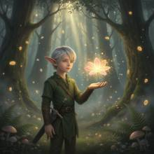

Grammar — In the magic forest, an elf boy did not draw the sword at his waist, b
In the magic forest, an elf boy did not draw the sword at his waist, but spread his palm, and a glowing flower appeared in his palm.

Judge — Direct
- FAILGrammar - Negation — The prompt specifies that the elf boy did not draw the sword at his waist. In the image, an elf boy is depicted holding a sword by its hilt in his right hand. The sword is unsheathed, which contradicts the instruction that the sword was not drawn.
- PASSAction - Hand (Character/Anthropomorphic) — The prompt describes the elf boy spreading his palm to reveal a glowing flower. In the image, the boy's left hand is open, palm up. A single, white flower is floating just above his palm, emitting a bright yellow glow with sparkling particles around it. The hand appears well-formed with a thumb and four visible fingers.
Judge — Continuum
- PASSGrammar - Negation — The elf boy has a sword in a scabbard attached to a belt around his waist. His hand is not on the hilt, and he is not in the act of drawing the weapon, which correctly adheres to the negation 'did not draw the sword'.
- PASSAction - Hand (Character/Anthropomorphic) — The image shows the elf boy's left hand with the palm spread open, facing upwards. A single pink and yellow flower, glowing brightly with sparkles, is levitating just above the center of his palm. The hand is depicted with five distinct, well-proportioned fingers and no visible anatomical errors.
What the agent did
Thinking
Generate an image of an elf boy in a magic forest, with a glowing flower in his open palm, sword sheathed at waist (not drawn).
Step 1 — `generate_image`
{
"model": "flux2-dev",
"prompt": "Fantasy illustration of a young elf boy standing in an enchanted magic forest. He has pointed elf ears, silver-blond hair, and wears a green forest tunic with a sheathed sword hanging at his waist in its scabbard, untouched. One hand is open with palm facing up at chest level, and a single luminous flower made of glowing golden-pink light floats just above his palm, petals radiating soft magical glow and tiny sparkling light particles. Surrounding him: ancient towering trees with moss, shafts of soft light breaking through the canopy, floating glowing spores, mist, ferns and mushrooms on the forest floor. Dreamlike, ethereal atmosphere, cinematic lighting, highly detailed fantasy art."
}Result img_0

Thinking
The image looks great: elf boy, magic forest, glowing flower above open palm, sword sheathed at waist (hilt visible, blade in scabbard). All elements match. Mark best and stop.
Model
The first generation already captured everything: the elf boy in the enchanted forest, sword sheathed at his waist (clearly not drawn), palm open with a glowing flower floating above it, light particles and mist throughout. Marking it as the final result.
Step 2 — `mark_best`
{
"image": "img_0",
"reason": "All prompt elements present and correct: elf boy in magic forest, sheathed sword untouched at waist, open palm, glowing flower hovering above it, ethereal forest atmosphere."
}Model
The image is complete and matches your scene: - **Elf boy** — pointed ears, silver-blond hair, green forest tunic, standing in a misty ancient forest - **Sword undrawn** — the sword rests sheathed at his waist, hilt and scabbard clearly visible and untouched - **Open palm** — his hand is extended with the palm facing up - **Glowing flower** — a radiant pink-gold flower of light hovers just above his palm, surrounded by sparkling magical particles - **Magic forest** — towering moss-covered trees, shafts of light through the canopy, glowing spores, ferns, and mushrooms This result is marked as final. Let me know if you'd like any changes!